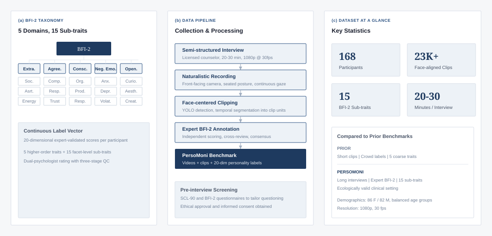

Long-horizon Naturalistic Interaction
168 semi-structured interviews conducted by licensed counselors, eliciting authentic nonverbal cues across extended social interactions, not thin-slice impressions.
Understanding personality from visual behavior remains challenging. Existing benchmarks rely on short, crowd-annotated clips and capture only coarse impressions, lacking temporal continuity, clinical validity, and fine-grained sub-trait structure.

168 semi-structured interviews conducted by licensed counselors, eliciting authentic nonverbal cues across extended social interactions, not thin-slice impressions.
Continuous scores for all five Big Five domains and, for the first time in PTI benchmarks, fifteen validated BFI-2 sub-traits, scored independently by two psychology professionals.
A structured benchmark with interview videos, face-aligned clips, and expert BFI-2 annotations, to be released for academic research on fine-grained personality computing.
PersoMoni bridges the gap between ecological validity and computational tractability, preserving the richness of full interviews while providing localized clip units for learning.
| Participants | 168 (86 F / 82 M) |
|---|---|
| Video clips | 20,000+ face-aligned segments |
| Duration | ~25 min avg. per interview |
| Resolution | 1080p @ 30 fps |
| Label space | 20-dim continuous BFI-2 vector |
| Annotation | Dual expert rating + averaging |
| Demographics | Balanced age & education groups |
PersoMoni is the first personality computing benchmark to extend granularity from 5 to 15 dimensions, aligned with the psychometrically validated BFI-2 hierarchical framework.
If you use the PersoMoni dataset in your research, please cite our paper.
@article{cui2026persomoni,
author = {Cui, Feng-Qi and Huang, Jinyang and Zhao, Sirui and Li, Kun and Liu, Zhi and Li, Meng and Jia, Ziyu and Guo, Dan and Wang, Meng},
journal = {IEEE Transactions on Affective Computing},
title = {PersoMoni: A Comprehensive Video-Based Benchmark Dataset for Fine-grained Personality Assessment with 15 Trait Dimensions},
year = {2026},
pages = {1--14},
doi = {10.1109/TAFFC.2026.3698795},
url = {https://ieeexplore.ieee.org/document/11543185}
}